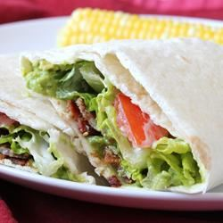

B.L.A.T. Wraps

Description
My family loves B.L.A.T. sandwiches. The addition of avocado to the normal bacon, lettuce and tomato sandwich makes so much sense to a girl born in California! We have been calling these 'BLATS' for years. Recently we decided to update our favorite treat by using a tortilla in place of the bread, and Ranch dressing instead of mayonnaise. This recipe is so easy and tasty, the hardest part is cooking the bacon!
Original Recipe!
Ingredients
- 8 slices bacon
- 4 (10 inch) flour tortillas
- 4 tablespoons Ranch-style salad dressing
- 1 avocado - peeled, pitted and diced
- 1 tomato, chopped
- 1 cup shredded lettuce
Steps
- Place bacon in a large, deep skillet. Cook over medium heat for 10 to 15 minutes, or until crisp. Drain, crumble, and set aside.
- Warm tortillas in microwave oven for 30 to 45 seconds, or until soft. Spread 1 tablespoon Ranch dressing down the center of each tortilla. Layer crumbled bacon, avocado, tomato and lettuce over the dressing. Roll the tortilla around the other ingredients.